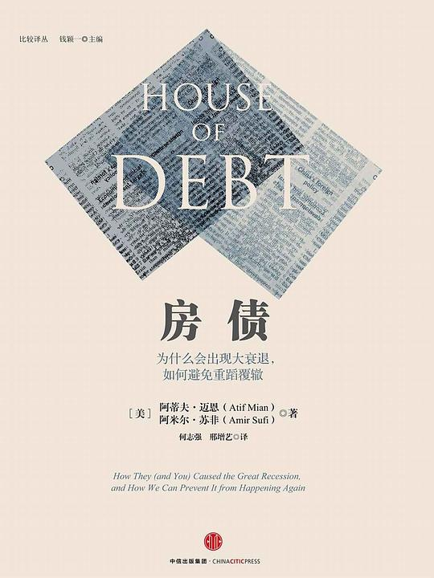

|  |
房债：为什么会出现大衰退，如何避免重蹈覆辙 |
比较译丛序
2002年，我为中信出版社刚刚成立的《比较》编辑室推荐了当时在国际经济学界产生了广泛影响的几本著作，其中包括《枪炮、病菌与钢铁》、《从资本家手中拯救资本主义》、《再造市场》（中译本后来的书名为《市场演进的故事》）。其时，通过二十世纪九十年代的改革，中国经济的改革开放取得阶段性成果，突出标志是初步建立了市场经济体制的基本框架和加入世贸组织。当时我推荐这些著作的一个目的是，通过比较分析世界上不同国家的经济体制转型和经济发展经验，启发我们在新的阶段，多角度、更全面地思考中国的体制转型和经济发展的机制。由此便开启了“比较译丛”的翻译和出版。从那时起至今的十多年间，“比较译丛”引介了数十种译著，内容涵盖经济学前沿理论、转轨经济、比较制度分析、经济史、经济增长和发展等诸多方面。
时至2015年，中国已经成为全球第二大经济体，跻身中等收入国家的行列，并开始向高收入国家转型。中国经济的增速虽有所放缓，但依然保持在中高速的水平上。与此同时，曾经引领世界经济发展的欧美等发达经济体，却陷入了由次贷危机引爆的全球金融危机，至今仍未走出衰退的阴影。这种对比自然地引发出有关制度比较和发展模式比较的讨论。在这种形势下，我认为更有必要以开放的心态，更多、更深入地学习各国的发展经验和教训，从中汲取智慧，这对思考中国的深层次问题极具价值。正如美国著名政治学家和社会学家李普塞特（Seymour Martin Lipset）说过的一句名言：“只懂得一个国家的人，他实际上什么国家都不懂”（Those who only know one country know no country）。这是因为只有越过自己的国家，才能知道什么是真正的共同规律，什么是真正的特殊情况。如果没有比较分析的视野，既不利于深刻地认识中国，也不利于明智地认识世界。
第1章 波西米亚丑闻
过去在美国销售房车还是一件比较容易的事情，正如温尼贝戈（Winnebago）房车公司的首席执行官鲍勃·奥尔森所秉持的理念，“美国人的生活是离不开性、酒和周末的”。但是形势在2008年急转直下，房车制造领域的巨头摩纳哥（Monaco）房车公司的销售几乎下降了30%，这使得摩纳哥的管理层别无选择，公司的发言人克雷格·万尼奇科叹息，“我们非常遗憾，经济形势很明显已经超出了我们的控制范围，迫使我们做出艰难的决策”。
摩纳哥是美国头号柴油动力房车制造商，它在北印第安纳的制造企业历史悠久，产品畅销全美。2005年，公司售出了15000多辆车，在印第安纳的瓦卡鲁萨、纳帕尼、埃尔克哈特三个县雇用了约3000名员工。2008年7月，摩纳哥房车有限公司解雇了印第安纳两个工厂的1430名工人，这让员工们都感到非常吃惊。曾在瓦卡鲁萨县工厂工作过的珍妮弗·艾勒在一家路边餐厅告诉记者，“我感到极为震惊，我们以为只不过是又一次临时性解雇，我们并不希望这样的事情发生。”瓦卡鲁萨一家饭店的调酒师卡伦·亨特总结了被解雇工人所面临的困难，“他们在这里已经工作多年，现在都已经年届五旬，谁还会雇用他们？他们还处在惊恐中，还有很多困难在后面等着他们呢！”
就像印第安纳摩纳哥房车公司的工人一样，作为无辜的旁观者，在衰退期间丢掉了工作，他们感到震惊和困惑。并且还有一个原因，严重的经济衰退根本就是一个谜团，完全不是因为经济体生产能力受到明显破坏所引发的。例如，在大衰退期间，没有引致建筑、机器发生毁坏的自然灾害或者战争，也没有出现最新的前沿技术。摩纳哥房车公司的工人也没有在突然之间丢掉他们过去多年培训所掌握的大量知识。经济体突然停滞，消费猛然下降，上百万工作岗位丢失。毫无疑问，严重经济紧缩带来的人力成本是巨大的，但又没有明确的原因来解释这一切为什么会发生。
当前与经济活动相关的数据迅猛增加，而且我们可以用之进行评估的手段也有了很大的进步，相对于凯恩斯及其所处的时代，我们已经有了巨大的优势。故而，我们在本书中设定了一个宏伟的目标。我们试图利用数据和科学方法来回答当代经济所面临的一些最重要的问题：为什么会出现这么严重的衰退？我们可以避免大衰退及其带来的严重后果吗？我们怎么阻止类似危机发生？本书基于经验证据对这些问题做出了回答。摩纳哥房车公司被解雇的工人，以及类似的数百万美国失业工人值得拥有基于证据的解释，大衰退为什么会发生，我们怎样做才能在未来避免衰退重复上演。
凶杀悬疑小说？
在思考大衰退的问题时，一个重要的事实跃然而出：从2000年到2007年，美国的家庭债务急剧上升，七年间总量翻了一番，达到14万亿美元，并且家庭债务收入比从1.4攀升至2.1。为了更直观地展示这种情况，图1.1显示了美国1950～2010年间的家庭债务收入比情况。直到2000年前，债务上升的趋势都较为平稳，此后出现了剧烈变化。
经济学家戴维·贝姆利用更长时间的历史数据（基于家庭债务与国内生产总值的比率），研究显示，大衰退之前的家庭债务大增长在美国的历史上只出现在20世纪的一段时间里：大萧条起初的几年。从1920年到1929年，用于购买汽车、家具的抵押贷款和分期付款债务都出现大幅增长。尽管数据不是很准确，但经济学家查尔斯·珀森斯在1930年所做的测算显示，城市非农户的住房抵押贷款从1920年到1929年增长了2倍。抵押贷款债务的大规模增长足以超过2000年至2007年的房地产繁荣时期。
20世纪20年代，分期付款融资的兴起彻底改变了居民家庭购买洗衣机、汽车和家具类耐用品的方式。研究消费信贷历史的资深专家玛莎·奥尔尼解释道，“20世纪20年代是消费信贷历史的一个关键转折点”。在美国历史上，耐用品经销商第一次开始假定路过店铺的潜在购买者会通过举债的方式来购物。社会对借贷行为的态度也发生了变化，以贷款方式购买商品更加为人们所接受。
因此我们观察到一个现象，那就是在大衰退和大萧条之前，家庭债务都出现了大规模增长。与此同时，还有另一个引人注目的共同现象：二者都始于家庭支出莫名其妙的大幅下降。摩纳哥房车有限公司的工人们对此感受颇深，他们被解雇的主要原因就是2007年和2008年家用汽车购买出现大幅下滑。这种情况非常普遍，在大衰退早期，也即在2008年9月金融危机最严重之前，汽车、家具和家电类耐用消费品的购买量就出现直线下降。与2007年相比，2008年1～8月，也即在大衰退或金融危机最严重之前，汽车的销售量下降了近10%。
大萧条开始时也出现了居民支出大幅下降的情况，经济史学家彼得·特明认为：“大萧条之所以如此严重，就在于自主支出出现大幅持续下降。”他还进一步谈到，1930年的消费下降“真的是自发的”，且下降幅度很大，很难用收入下降和价格来解释。就像大萧条一样，支出下降引发了此次大衰退，下降幅度也是出奇的大。
国际证据
在经济灾难爆发前，家庭债务大幅攀升、居民支出大幅下降这种情况并非美国所独有，证据显示这种关系在国际上也很常见。从国际上看，我们注意到另外一些情况：债务增加越多，消费下降就越厉害。2010年，鲁文·格利克和凯文·兰辛对经合组织（OECD）16个成员国在大衰退期间的情况所做的研究显示，1997年至2007年，家庭债务增加最多的国家恰好就是那些在2008年至2009年间居民支出下降最大的国家。他们还发现在经济下滑前家庭债务增长与大衰退期间的消费减少存在强烈的相关性。他们指出，爱尔兰和丹麦消费下降幅度很大，同时这两个国家在21世纪的头几年家庭债务大幅增加。就像美国在2000年至2007年家庭债务显著增加一样，爱尔兰、丹麦、挪威、英国、西班牙、葡萄牙和荷兰的家庭债务甚至增加得更多，然而也像美国家庭支出剧烈下降一样，这6个国家中有5个国家的家庭支出下降幅度比美国大（一个例外是葡萄牙）。
国际货币基金组织的研究人员在一项研究中将格利克和兰辛的样本扩大到36个国家，引入了很多东欧和亚洲国家，将重点集中到2010年的数据上。他们的研究结果证实，在衰退期间家庭债务增长是预测家庭支出下降的最好指标之一。这些研究得出的基本观点非常简单：如果你在大衰退之前就知道一个国家的家庭债务增加了多少，那么你也就能够准确地预测在大衰退期间哪个国家的居民支出下降最严重。
但是，家庭债务和衰退严重程度之间的关系是大衰退期间独有的特征吗？早在大衰退前的1994年，最近一任英格兰银行行长墨文·金曾在欧洲经济学会发表了题为“债务紧缩：理论与证据”的主席致辞，在摘要的第一行，他就指出：“20世纪90年代早期，那些衰退最为严重的国家也是前期私人债务负担增加最多的国家。”在致辞中，他还提供证据说明一国在1984～1998年间家庭债务增长与1989～1992年间该国经济增长下降之间的关系。这里的分析与格利克和兰辛及国际货币基金组织研究人员20年后所做的分析类似。尽管所面对的是完全不同的衰退，却发现了完全相同的关系：家庭债务负担增加最多的国家，特别是瑞典和英国，在衰退期间经历的经济增长下滑也最严重。
我们可以研究另外一些经济下滑情况，也即卡门·莱因哈特和肯尼斯·罗高夫所称的发达国家战后“五大”银行业危机：1977年的西班牙、1987年的挪威、1991年的芬兰和瑞典以及1992年的日本。这些经济衰退都由资产价格崩溃所引发，导致银行业大规模损失，而且所有这些经济都陷入深度衰退但恢复都十分缓慢。莱因哈特和罗高夫表示，在所有这五起经济衰退之前，所在国都出现了房地产价格大幅上涨和大规模经常账户赤字（该国作为整体向国外借贷的数量）。
但是莱因哈特和罗高夫并没有特别强调银行业危机出现之前的家庭债务情况。为了考察家庭债务情况，莫里茨·舒拉利克和艾伦·泰勒整理出了一个很好的数据库，涵盖了除芬兰以外的其他国家的危机。在这四个经济体中，在莱因哈特和罗高夫所强调的银行业危机爆发之前，都出现了私人债务负担大幅攀升的情况（这里的私人债务，是指家庭和非金融企业债务，不是政府或银行的债务）。从一定意义上看，这些银行业危机也是一种私人债务危机——在这些危机发生前都出现了私人债务大幅增加的情况，与美国出现的大衰退和大萧条类似。因此，银行业危机与家庭债务大幅增加密切相关，二者的结合助推了金融危机的爆发，莱因哈特和罗高夫所做的开创性研究表明它们与最严重的经济衰退紧密相连。尽管银行业危机可能是容易引起人们关注的严重事件，但我们也必须关注银行业危机发生前的家庭债务增加情况。
在金融危机中哪个方面的因素决定了经济衰退的严重程度？是私人债务负担增加还是银行业危机？奥斯卡·约尔达、莫里茨·舒拉利克和艾伦·泰勒的研究帮我们给出了这个问题的答案，他们考察了14个发达国家在1870～2008年间所发生的200多次经济衰退，在研究开始时他们确认了莱因哈特和罗高夫提出的基本模式：银行业危机导致的经济衰退比普通的经济衰退要严重得多。但约尔达、舒拉利克和泰勒也发现，相比于其他衰退，银行业危机型衰退发生之前的私人债务增加要大得多。实际上，在银行业危机型衰退发生前，债务扩大了5倍。此外，私人债务水平低时的银行业危机型衰退与普通的衰退相似。因此，如果债务水平没有上升，银行业危机型衰退将比较普通。他们也表明带有高私人债务的普通衰退将比其他普通衰退更加严重。换言之，即便没有银行业危机，私人债务水平的上升也将加剧衰退。不过，他们也指出最严重的衰退既包括高的私人债务水平，也包括银行业危机。约尔达、舒拉利克和泰勒从分析其庞大的衰退样本中得出了一个直接的结论：
据我们所知，我们首次证明在发达国家一个多世纪的现代经济史中，经济扩张时期的信贷增加与此后出现的经济衰退程度之间存在紧密的相关性。我们证实金融危机的经济代价可能有所差异，主要取决于危机之前的信用扩张阶段所形成的债务杠杆。
总之，国际上的证据及美国的证据都表明一种模式：经济灾难爆发前几乎都出现了家庭债务的大幅增加。实际上，这种相关性非常显著，接近于宏观经济学中的经验法则。而且，家庭债务的大幅增加、经济灾难的爆发似乎与支出崩溃相关。
因此，证据初步显示家庭债务、支出和严重的经济衰退间存在关联，但三者间的确切关系并不十分清楚。这就需要考虑其他解释，而很多睿智的、令人尊敬的经学家们的确关注到了其他方面。他们认为家庭债务仅仅是一个侧面，要用它来解释严重的经济衰退问题，没有那么大的说服力。
其他观点
那些对家庭债务重要性持怀疑态度的经济学家一般都有一些其他观点，或许最常见的就是基本面观点。根据这种观点，严重的经济衰退主要是由于经济体受到一些基本面冲击而造成的：自然灾害、政变或者对未来增长预期的改变。
但是我们上面讨论的大多数严重经济衰退，在发生之前并未发生明显的自然灾害或政治动荡。因此，基本面观点通常将衰退归因于经济增长预期的变化，衰退发生前的债务增加仅反映了人们对收入或生产率增长的乐观预期，或许人们相信将出现某些技术促进生活福利发生巨大改善。当这些高期望没能实现时，就会导致严重的经济衰退。人们不再相信技术会进步或者收入将改善，因此将会减少支出。按照基本面观点，在经济衰退前债务仍会增加，但这种关系是伪相关的，并未显示出因果关系。
另一种解释是动物精神观点，其中经济的波动主要受非理性的或不稳定的信念所影响，除了信念不是任何理性过程处理的结果外，这种观点实际上与基本面观点比较相似。例如，大衰退前的房地产繁荣，人们可能非理性地认为房价将永远上涨。然而不稳定的人类特性导致人们对其信念做巨大调整，变得悲观，进而减少支出。由于预期的自我实现，将出现房价崩溃，经济陷入失控状态。人们开始担心经济下滑，而他们的恐惧使经济下滑不可避免。在这种观点里，家庭债务也与经济衰退无关。在基本面观点和动物精神观点中，都可以感觉到一种强烈的宿命论：经济活动的大幅下滑要么不可预测要么不可避免，我们仅需要简单地将它作为经济发展过程中的自然部分加以接受。
人们常常提出的第三种观点就是银行业观点，认为经济面临的中心问题就是极为脆弱的金融行业导致信贷流动出现停滞。根据这种观点，债务增加并不是个问题，问题在于我们阻止了债务的流动。如果我们可以使银行向家庭和企业发放贷款，那么经济将不会出现任何问题。如果我们拯救了银行，我们就可以拯救经济，一切都将重回常态。
在大衰退期间，银行业观点得到了政策制定者们的大力支持。2008年9月24日，小布什总统在其标志性讲话中对此表现出极大的热情，列出了政府部门的响应措施。正如他所言，“在房价下跌期间，与住房抵押贷款相关的金融资产价值下跌较多，持有这些资产的银行限制发放贷款。由此造成的结果就是，我们整个经济处于危险境地……因此我建议联邦政府降低这些问题资产所带来的风险，提供所必需的资金，这样一来，银行和其他金融机构就能够避免崩溃，重新恢复贷款……这些救助措施……目标是为了保护美国整体经济。”他认为，如果我们救助了银行，就能够帮助“创造工作岗位”，因此“也就可以帮助我们的经济实现增长”。所谓的过度债务之类的事情并不存在，相反，我们应该鼓励银行发放更多贷款。
为了弄清楚家庭债务是如何影响经济的，我们将目标聚焦到大衰退时期的美国。要感谢目前可用数据的大幅增加及计算能力的提高，这使我们比生活在经济衰退之前的经济学家有更大的优势。我们现在有丰富的微观经济结果方面的数据，包括借款、支出、房价和违约情况。所有这些数据都可以借助美国邮政编码系统来获得，甚至一些个人层面的数据也都可以获得。这就使我们可以研究谁的债务更多一些，谁减少了支出，以及谁失去了工作。
大蓝图
如果一个金融体系的繁荣发展靠的是向家庭大量发行债务，那么它就做了我们不想让它做的事情——它将风险完全集中在债务人身上。我们希望金融体系帮助我们免受房价下跌冲击的影响，但恰恰相反，正如我们将展示的那样，它将损失完全集中到了房产所有者身上。金融体系实际上伤害了我们，而不是帮助我们。例如，对负担住房抵押贷款的房产所有者来说，我们将论证为什么房屋资产比银行持有的住房抵押贷款的风险要高得多，而只有当房价崩溃时房产所有者才会意识到这个问题。
第一篇 大毁坏
尽管房价下跌一般不会导致受伤或者死亡之类的危险，但给房产所有者带来了另一种无法预料的严重风险。对很多美国人来说，房屋资产是他们唯一的财富来源，他们还指望用它来退休养老或支付孩子的大学教育费用。房价的急剧下跌就像摧毁堪萨斯小镇的龙卷风那样出乎人们意料。但是一旦提到与房价相关的风险，金融体系对住房抵押贷款债务的依赖却扮演了与提供保险相反的功能：它将风险完全集中到房产所有者身上。保险可以保护房产所有者，但债务将房产所有者置于危险境地，下面就是债务运作的机理。
第2章 债务与毁灭
严峻的债务
债务在经济中扮演着很普通的角色，常常使我们忘记了它的残酷性。债务的一个基本特点是借款人必须承担与资产价格下跌相关的第一损失。举例来说，如果一个房产所有者利用80000美元的住房抵押贷款购买了一幢价值100000美元的房屋，那么房产所有者在房屋上的资产净值为20000美元。如果房价下跌20%，房产所有者将损失20000美元（他的全部投资），然而住房抵押贷款的发放人却毫无损失。如果房产所有者以80000美元这个新的价格卖掉房子，他必须用其全部收益偿付住房抵押贷款，这样他将一无所有。用金融术语来讲，住房抵押贷款发放人享有房屋的优先索赔权，因此他在房价下跌时是受到保护的。房产所有者享有次级索赔权，如果房价下跌，他将遭受巨大损失。
但是在这个例子中，我们不应该将住房抵押贷款发放人作为一个独立的个体来考虑。在经济体中，住房抵押贷款发放人使用的是储户的钱，储户将钱以存款、债务或权益的方式给银行，因此是住房抵押贷款银行的最终拥有者。当我们说住房抵押贷款发放人拥有房屋的优先索赔权，我们真正所指的是经济体中的储户拥有房屋的优先索赔权。那些高净值的储户在面对房价下跌时所得到的保护要比借款人多得多。
我们退一步，看看经济整体中的借款人和储户。当房价整体下跌20%时，损失全部集中到经济体中的借款人身上。考虑到在价格暴跌前借款人已经是低净值者（这就是他们为什么要借款的原因），损失完全集中到他们身上，将恶化其财务状况。他们已经没有多少净资产，现在他们的净资产变得更少。与之相比，储户一般拥有较多的金融资产，并且基本没有住房抵押贷款，房价下跌时，其净资产价值不会有多大损失。这是因为他们通过存款、债券及持有的资产，最终享受经济体中房屋的优先索赔权。尽管房价可能下跌很多，优先索赔权也可能遭受损失，但他们比借款人遭受的损失要低得多。
因此，损失完全集中在债务人身上将不可避免地与财富不平等联系在一起。当高债务水平的经济体的房价出现下跌，那么这种下跌将放大财富的不平等，因为低净值家庭承担了大部分损失。尽管储户也可能受到负面影响，但他们在经济中的相对地位提高了。在上面的例子中，在房价崩溃前，储户占有房屋价值的80%，而房产所有者占有房屋价值的20%；但房价崩溃后，房产所有者的房屋所有权被完全排除，而储户百分之百占有房屋价值。
大衰退期间的债务与财富不平等
大衰退期间，房屋价值减少了5.5万亿美元，这个数字是很巨大的，特别是考虑到美国经济的产值也才约为14万亿美元。面对如此巨大的打击，房产所有者的净值遭受明显的损失。但是损失的分配情况如何呢，借款人的境遇究竟又是如何变得更糟糕的呢？
2007年美国不同家庭在净值的组成和杠杆（债务总额）上存在巨大差异。在净值分布中位于底层20%的房产所有者——也是最穷的房产所有者——是高度杠杆化的，他们的杠杆比率，或总债务与总资产的比率，接近80%（就像上面房屋价值为100000美元的例子）。而且，最穷的房产所有者的净值几乎完全依靠房屋资产，因此贫穷的房产所有者几乎没有金融资产用以应对经济衰退。他们只有房屋资产，而且是高度杠杆化的。
而富人在两个方面有所不同，首先，衰退到来时他们的债务要少得多，与最穷的房产所有者高达80%的杠杆比率相比，最富的20%的房产所有者的杠杆比率仅为7%；其次，他们的净值绝大多数都放在了非房屋资产上。穷人是4美元的房屋资产对应着1美元的其他资产，而富人恰恰相反，是1美元的房屋资产对应4美元的其他资产，比如货币市场基金、股票和债券。
这一点都不令人惊讶，穷人的债务就是富人的资产。既然最终都是富人通过金融体系借贷给穷人，因此当我们从贫穷的房产所有者成为富裕的房产所有者时，债务就会减少而金融资产就会增加。正如我们上面所提到的，债务的使用和财富的不平等是紧密相连的。富人向穷人提供融资本身不是什么善恶的事情，但关键要记住这种借贷是以债务融资的方式实现的。当富人拥有一家银行的股票和债权时，他就拥有这家银行所发放的住房抵押贷款，支付的利息也通过金融体系从房产所有者流向了富人。在开始讨论衰退问题时，我们需要牢记图2.1概括出的几个关键事实。最穷的房产所有者也是杠杆化最高的，面对房地产业风险的暴露也是最大的，同时他们几乎没有金融资产。当高杠杆、高房屋风险暴露和缺乏金融资产这几点组合在一起时，对于社会中最弱势的家庭来说是灾难性的。
穷人是如何变得更穷的
从2006年到2009年，全美房价整体上下降了30%，并且一直保持在低位，到2012年末仅有小幅恢复。标准普尔500指数从2008年到2009年初急剧下降，但之后强力反弹。用先锋全债券市场指数（Vanguard Total Bond Market Index）来衡量，在衰退期间，市场利率急剧下降，债券价格强力反弹——从2007年至2012年间，债券价格上升了30%多。面临大衰退，任何家庭只要持有一定债券，都可以完美地对冲经济崩溃。但正如上文所示，仅有经济体中最富有的那部分人持有债券。
房价下跌对低净值家庭的打击最为沉重，因为他们的财富完全与房屋资产相关联。但这仅是故事的一部分，事实上由于低净值家庭拥有非常高的债务负担，这将放大其净值的减少程度，这种放大就是杠杆乘数。用数学语言来讲，杠杆乘数描述的就是房价的一定下降怎样导致有债务杠杆家庭的净值出现更大幅度的下跌。
从2006年到2009年，尽管全美房价下降了30%，但因为贫穷的房产所有者是杠杆化的，所以他们的净值下降更多。实际上，因为低净值家庭的杠杆比率高达80%，房价下降30%毁掉了他们的所有净值。一个事实常常被忽略：当我们谈到房价下降30%时，由于杠杆乘数的存在，负债的房产所有者净值下降的幅度将大得多。
上述事实可以确切地告诉我们哪一部分房产所有者在大衰退期间受到的打击最为沉重，贫穷的房产所有者几乎没有任何金融资产，他们的财富几乎完全由房屋资产构成，而且他们对房屋资产也仅享有次级索赔权，因此房价下跌受杠杆乘数的影响而进一步放大。尽管金融资产价格得到恢复，但贫困家庭并未由此有任何收获。
图2.2将这些事实汇总到一起，向我们展示了大衰退最为重要的一种情况，并给出了底层、中层和最高层房产所有者的财富分布中房屋净值的变化情况。贫穷的房产所有者的净值在大衰退期间绝对受损，从2007年到2010年，他们的净值从30000美元下降到几乎为零，其中杠杆乘数发挥了作用。大衰退期间净值的减少几乎完全侵蚀掉了1992～2007年间获得的收益。考虑到贫穷的房产所有者对房屋资产的依赖以及庞大的债务负担，这种结果是我们完全可以预料到的。富裕的房产所有者的平均净值从320万美元下降到290万美元。尽管从金额上看这样的损失还是比较可观的，但下降的百分比几乎可以忽视——他们基本上毫发无损。这种下降并未大到足以抵消1992～2004年间获得的收益。富人们的生活依然滋润，因为他们持有的金融资产在衰退期的表现比房屋资产要好得多，而且很多金融资产本身享有房屋的优先索赔权。
很多人讨论收入变化趋势与财富的不平等，但他们常常忽略了债务在其中所发挥的作用。一个金融体系过度依赖债务，那么它将放大社会财富的不平等。尽管通过分析债务的作用，我们可以从中了解很多不平等产生的原因，但是我们的关注点在于损失分配的不平等是如何影响整体经济的。
净值损失的地理分布
大衰退期间，房价暴跌有很强的地理因素，因此我们的研究有赖于此。净值下降最大的县位于加利福尼亚和佛罗里达。在其他州中，也出现了小范围大幅下降，包括科罗拉多、马里兰和明尼苏达。美国中部的一些州，如堪萨斯、俄克拉何马、得克萨斯，在很大程度上避免了房价崩溃。
对大衰退期间的很多居民来讲，房价下跌后其房屋的价值已经低于他们所欠的住房抵押贷款，因此从住房抵押贷款的角度来看，房产所有者已经“资不抵债”或者“价值倒挂”了，实际上他们所拥有的房屋是负资产。如果他们选择出售，还得向银行支付住房抵押贷款与房屋售价之间的差价。面对这样恶劣的情况，房产所有者要么继续保留房屋，而所欠银行的住房抵押贷款超过房屋的价值，要么即刻卷铺盖走人，让银行止赎。
大多数人选择了保留房屋。在2011年，有1100万套房屋——占所有住房抵押贷款房屋的23%——变成了负资产。尽管已经很了解这些数字，但在写到这些数字时我们仍然感到吃惊。它们的确让人震惊，值得反复宣讲：在美国每4套住房抵押贷款住房中有1套是资不抵债的。在上面提及的中央谷的4个县中，4个邮政编码区的购房者中有70%成为资不抵债者。就默塞德县来看，这个数字达到60%。也有很多房产所有者选择离开，让银行止赎。当然，离开不是毫无代价的。未能偿还按住房抵押款将使个人信用积分完全丧失。而且，止赎将会导致恶性循环，进一步减少家庭的净值。
止赎与大甩卖
大衰退期间，债务的负面影响远不止对债务人本身。当房价暴跌时，与过度杠杆相关的问题会扩散到整个经济体。这种溢出效应包括失业率增加、建筑业破产。但是，最直接的后果就是止赎出现惊人上升。长期以来，经济学家一直都在关注资产价格崩溃时债务对个人的影响，以极大的折扣甩卖资产可能是最常见的原因。甩卖是债务人或债权人愿意以远低于市场价值的价格出售资产时才会出现的情况。从住房市场看，甩卖一般出现在止赎之后：当银行从拖欠贷款的购房者手中收回房屋后，他们以极低的折扣价格出售房屋。
房屋出售后，其他购房者和评估师就会按照甩卖价格来评估该地区其他房屋的价格。由此造成的后果就是，该地区所有房屋的价格都会受损，甚至根本没有债务的房产所有者也会感到他们房屋的价值出现下跌。因此，财务状况健康的房产所有者可能也无法为其住房抵押贷款进行再融资，也无法以一个公平的价格出售其房屋。在过去的几年中，房产所有者利用房屋进行再融资时，评估价之低令人惊讶。这样的低评估价很显然是因为评估师按照止赎房屋的甩卖价格来评估临近地区所有房屋的价值。
在大衰退期间，止赎使下行的住房市场进一步恶化。2009～2010年，房屋止赎达到了空前水平，而大衰退之前的一个高峰出现在2001年，当时在全部住房抵押贷款中，约有1.5%出现止赎。而在此次大衰退中，止赎情况是以前的三倍：2009年，在全部住房抵押贷款中，约有5%存在止赎的情况。丹尼尔·哈特利估算，2009～2010年间，在全部销售的房屋中约有30%～40%是止赎房屋或短售房屋。
在经历了与2004～2006年相似的房地产发展轨迹后，止赎较容易的州，其房价下降得较多。那些拥有司法止赎程序的州，房价下降了25%；而那些没有司法止赎程序的州，房价下降了超过40%。图2.3给出了两类州的房价变化情况——很清楚，那些没有司法止赎程序的州，房价下降相对较快。使用各州的这种差异，我们的研究发现，在2007～2009年间，面临止赎的房产所有者每增加1个百分点，房价将下降1.9个百分点。而且，止赎不仅使房价下降，还抑制了消费和住房建设。
债务引致的抛售还不仅限于住房市场。在20世纪80年代末的杠杆收购浪潮后，也出现了抛售现象，安德烈·施莱弗和罗伯特·维什尼强调了这种抛售的重要性。在那个时期，一些杠杆非常高的公司被迫以极低的折扣价出售其资产，同时也降低了企业所有抵押品的价值。约翰·吉纳科普洛斯对资产抛售进行了大量研究，其工作展示了违约怎样意味着将对一个人（借款人）来说价值很多的资产转移到另一个人（贷款人）身上，而这笔资产对后者来说一文不值。贷款人并不想要这类资产，而借款人又支付不起这笔资产。其结果是，贷款人被迫降低价格出售这类资产。这就导致一个恶性循环，当资产价格暴跌时，违约就会上升。但是贷款人要处理资产，因此违约的增加就会形成低迷的甩卖价格。当资产价格降低引致更多借款人违约时，就会进一步导致更多的违约。
毫无疑问，在住房市场泡沫破灭后，经济资源需要重新配置。过去太多的租客成了购房者，太多的购房者住进了他们根本负担不起的房屋里，同时也建造了太多的房屋。但当住房市场崩溃时，受困于负债的经济体再也不能以有效的方式来再配置资源。因此，债务导致了资产的抛售，加剧了净值损失。
债务：反保险
债务是反保险的。债务并没帮助人们分担与房屋所有权相关的风险，而是将风险集中到社会上风险承担能力最低的人群身上。正如上文所述，在大衰退期间，债务显著地放大了财富分配的不平等。它还通过止赎压低了房价。房价一旦下跌，便毁掉了负债购房者的净值，进而带来灾难性的后果——他们停止了消费。
第3章 减少支出
对大衰退的叙述大都集中在2008年9月雷曼兄弟的破产上。有观点认为，允许雷曼兄弟破产是一个“巨大的错误”，不出手救助触发了全球性的经济大滑坡。《每日野兽报》的雅各布·韦斯伯格在一篇有关大衰退原因的文章中将此描述为“几乎是全民共识”，“政府决定不再救助雷曼兄弟，一场全球性大衰退就不可避免”。这一论调与第1章所述的银行业观点紧密相连。按照这种观点，雷曼兄弟的破产冻结了信用体系，妨碍了企业获得必需的贷款以维持经营。由此造成的结果就是，这些企业被迫削减投资，解雇工人。按照这种论调，如果我们能够阻止雷曼兄弟破产，那么我们的经济将毫发无损。
消费驱动式衰退
实际上在2006年住宅投资下降就已经达到高潮，在雷曼兄弟破产的整整两年前。2006年二季度，按年率计算，住宅投资下降17%。从2006年二季度到2009年二季度，住宅投资在每个季度至少下降12%，2007年四季度和2008年一季度达到了负的30%。2006年后三个季度，仅住宅投资下滑就使当年GDP（国内生产总值）增长减少了1.1至1.4个百分点。
尽管居民在其他耐用消费品上的支出下降并没有像住宅投资那么早，但其下降仍然早于银行业危机的全面爆发。与2006年相比，2007年家具购买下降了1.4%，在家庭装修方面的支出下降了4%。家用电器方面的支出在2007年仍然增长2%，但增速明显低于2005年和2006年的7%。
然而，认真审视一下2008年，可以为我们提供重要的启示。2008年9月当雷曼兄弟和美国国际集团（AIG）相继破产后，银行业危机全面爆发。因此，将焦点集中在1～8月，我们就可以估算2008年银行业危机爆发前的支出下降情况。作为基准，考虑到零售行业具有季节性，我们想比较2008年1～8月与2007年1～8月的支出情况。从中可以看到一种明显的情况，在2008年，汽车支出下降9%，家具支出下降8%，装修支出下降5%。这些下降都全部出现在雷曼兄弟破产之前。因此居民在耐用消费品上支出的急剧减少一定是由某种事情引发的，但不是银行业危机。第1章的摩纳哥房车有限公司的例子与这里的证据是相吻合的。需要记住，该公司在北印第安纳的工厂大规模解雇员工是发生在2008年夏季，先于银行业危机的全面爆发。实际上，对房车的需求在2007年和2008年初就开始骤减了，也先于雷曼兄弟的破产。
哪些地方的支出下降了
高净值下降县的净值平均下降了26%，而低净值下降县的净值几乎没有减少。回忆前文提及由于房价暴跌导致的净值减少可以分解为两个因素：房价下降和杠杆乘数。由此造成的结果是，即使在房价下降百分比相同的情况下，那些债务负担越高的县，净值下降幅度也越大。高净值下降县并不是那些房价暴跌县，反而是那些高债务水平与房价暴跌兼而有之的县。
与债务有何关系？
我们的研究估算了衰退期间房屋财富的边际消费倾向，约为0.05～0.07。换句话说，如果在衰退期间房价下降10000美元，个人平均会减少支出500～700美元。假设在大衰退期间房屋价值总共减少了5.5万亿美元，我们的估计就意味着房屋价值下降会导致居民零售支出减少2750亿～3850亿美元，这是一个非常庞大的数字。
但是这里的估计值仅是总体人口的平均边际消费倾向，并没告诉我们谁的支出削减得最多。如果债务在纯房屋财富效应之外对支出还有重要的影响，那么我们应该看到负债家庭有更高的房屋财富边际消费倾向，或者换句话说，在面对同等程度的房价下降时，负债越多的家庭相应减少支出的力度也会更大。
但是如果债务确实很重要，会出现什么情况？如果债务放大了房屋价值下降对支出的影响，我们就会看到家庭D比家庭N有更高的边际消费倾向。换句话说，在面对房屋价值等额下降的情况下，负债家庭在支出方面会减少得更多。如果家庭D比家庭N有更高的边际消费倾向，那么在房价暴跌时杠杆的分布变得很重要。如果房价下降将损失集中到了负债最多的人群中，那么对他们消费的影响将会特别严重。
超越财富效应
研究结果充满戏剧性，且强烈显示上面例子中的家庭D的支出削减要远远多于家庭N。在现实世界里，那些2006年房屋的贷款/价值比达到90%甚至更高的家庭，相比于房屋贷款/价值比为30%或更低的家庭，其房屋财富的边际消费倾向高出3倍多。举例来说，如果房屋价值下降10000美元，贷款/价值比超过90%的家庭在汽车上的支出减少了300美元，而贷款/价值比低于30%的家庭在汽车上的支出减少不到100美元。在房屋价值等额下降的情形下，债务负担越多的家庭支出削减的幅度越大。图3.3显示了根据杠杆分布所估算的边际消费倾向，二者之间存在显著的相关关系：当房屋价值下降时，房屋的杠杆率越高，家庭削减支出的幅度也就越大。
因此，尽管科技泡沫破灭也造成家庭财富的巨大损失，但未对家庭支出产生影响。然而大衰退期间，房地产泡沫破灭却对支出产生了巨大影响，为什么会出现这种情况？上文所述的边际消费倾向为我们提供了答案：科技股票由非常富有的家庭所持有，几乎没有任何杠杆。截至2001年末，美国约90%的股票是由净值分配中前20%的人群所持有，而这些家庭的杠杆率仅为6%（也就是说，这些家庭每100美元资产中，债务仅有6美元）。低债务的富裕家庭，其财富边际消费倾向也比较低。结果就是科技泡沫破灭对支出几乎没有产生影响，对此我们一点都不意外。
对证据的总结
初步的证据显示，在严重经济衰退来临之前几乎总是伴随着家庭债务的急剧增加。美国的大衰退和大萧条就是很好的例子，欧洲在过去十年里多次出现的严重经济紧缩也是很好的例子。甚至早在1994年，就有学者意识到经济衰退的严重程度与衰退前的家庭债务增加之间存在密切的关系。而且，衰退是由家庭支出突然大幅减少所触发的。
另一个重要事实是，在房屋这类资产价格暴跌时债务会导致什么样的损失分配。在美国大衰退期间，房地产市场暴跌对低净值、高负债的购房者影响尤为严重。负债购房者是房地产价格下跌所致损失的第一承担者，由此造成的结果是，他们目睹了自己的净值大幅减少。金融体系对负债的依赖意味着，那些财富最多的人在房价下跌时反而得到了保护，那些没有任何资产的人却受到了沉重打击。在大衰退之前本已严重的财富分配不平等在2006～2009年间进一步恶化。
当人们看到了支出的地域分布后，大衰退期间令人不解的消费骤减就不难理解了。那些家庭债务负担较重、房价下跌较多的县，在购房者净值被严重侵蚀的情况下，支出会急剧下降。那些成功躲过净值下降的县甚至在2008年全年都没出现支出下降。然而，即使成功避免房价下跌的县最终也出现了支出下降。
最后，债务是理解消费骤减的关键。由于止赎的外部性，它放大了房屋价值的损失，同时将损失集中到了那些高负债家庭，这些家庭的边际消费倾向也是最高的。
正如我们在本书开头所提及的，类似北印第安纳州那些被解雇的工人们需要有一个基于事实证据的解释，他们为什么会在大衰退期间失业。我们目前搜集了一些事实，使我们距离提供这样的解释更进了一步。在接下来的各章中，我们将提出一个经济紧缩理论，用以解释债务为什么会导致严重的经济紧缩，以及为什么会出现上百万工作岗位丧失这样的结果。
第4章 杠杆化损失：理论
哈尔·范里安是谷歌公司的首席经济学家和加州大学伯克利分校的经济学荣休教授，他非常相信数据的力量。“自文明开始到2003年，”他在近期接受的一次采访中说道，“人类仅创造了5个EB的信息，而现在我们每两天就会创造那么多的信息。”他还曾振振有词地说道：“未来十年统计学家将是最性感的工作。”范里安也明白数据大爆炸使得解释它们的技能要求也相应提高。正如他所说：“在未来十年，获取数据的能力将是一项非常重要的技能，包括理解数据、处理数据、从数据中提取有价值信息、交流数据。”你也许已经猜到了，我们同范里安一样对数据抱有激情，这也是为什么我们在前面花费三章的篇幅来搜集事实证据，帮助我们理解经济严重衰退的原因。但是我们也同意范里安关于要正确解释这些数据需要技能的观点。
基本面与罗宾逊·克鲁索
基本面观点很难解释发达经济体出现的严重紧缩。在严重的紧缩发生时，几乎没有出现对经济的生产能力产生影响的显著冲击。例如，并没有出现战争或自然灾害这样严重的灾难性事件，来触发大萧条、大衰退或当前在欧洲蔓延的经济低迷。技术能力也没有遭到破坏，我们并没有忘记如何建造汽车、飞机或房屋。虽然在这些事件爆发期间都出现了房地产价格暴跌，但我们并没看到房屋或建筑物的崩毁。甚至在生产能力都没出现任何毁坏的情况下，严重经济衰退就触发了。
基本面观点的失灵可以归结为两个主要问题。首先，经济的大衰退并非由某个摧毁了经济生产能力的灾难性事件所触发。它们发生于资产价格暴跌、家庭支出急剧减少之时。其次，按照基本面观点，即使存在导致支出下降的某些冲击，也没有明显的理由可以解释经济受到的影响。也就是说，就基本面观点而言，支出下降并不导致经济收缩或失业。需要记住的是，在基本面观点中，产出是由经济体的生产能力决定的，而不是由需求决定的。为应对消费的急剧下滑，基本面观点中的经济体具有天然的矫正力量，使经济满负荷运行，这些矫正力量包括更低的利率和消费价格，我们将在下文做进一步解释。然而，事实表明，这些矫正力量并不足以使经济体重回正轨。
要解释经济的大紧缩问题，就需要完全不同于基本面观点的理论，而任何不同于基本面观点的替代理论都必须回答如下关键问题：**为什么家庭会大幅削减支出？为什么支出削减会对总产出产生这么大的破坏性？为什么经济体没有对支出下降做出相应调整？为什么经济的产出会下降？为什么人们会失去工作？**杠杆化损失框架可以回答这些问题，并得到了数据的强力支持。我们现在就来看看这一理论框架的具体内容！
杠杆化损失框架
杠杆化损失框架的第一个组成要素就是因债务导致的人群差异。在经济中有借款人和储户，并且借款人有很高的杠杆。借款人以债务合约的形式向储户借款，债务合约要求每期支付利息。债务合约赋予储户对借款人资产的优先所有权。或者换句话说，当出现借款人不能偿还借款时，储户有权回收借款人的资产。如果房价下跌，并且借款人卖了房子，他仍然必须全额偿付住房抵押贷款。借款人对房屋拥有次级所有权，因此将直接承担与房价下降相关联的损失。
杠杆化损失框架的第二个组成要素是对经济的冲击，是它导致了负债家庭支出的急剧减少。通常，这种冲击可以是任何事件，只要它降低了杠杆化家庭的净值头寸，或者使这些家庭借款变得更加困难。从实际情况看，房地产价格暴跌几乎总能成为冲击。正如我们在第2章所展示的那样，大衰退期间的房价暴跌毁掉了负债家庭的净值。
在杠杆化损失框架下，由于两种效应的存在，放大了房地产价格下跌对支出的影响。首先，损失被集中到其支出对房屋财富最敏感的人群身上，即债务人。其次，止赎导致初始房价冲击被放大。
当债务将损失集中到负债家庭身上时，这些家庭就有很多停止支出的原因。其中一个原因就是他们必须重新积聚财富，以确保在未来有钱可花。例如，考虑一对五十多岁、年届退休的夫妇，他们在其房屋上有20%的净值，正考虑利用这些净值申请作为退休的财务支出之用，他们既可以卖掉大房子换成小房子，也可以申请房屋净值贷款。当房价下降20%，房屋净值化为泡影时，他们将陷入困境。他们将没有足够的财富来覆盖退休时的计划支出。由此造成的结果就是，他们为了增加储蓄而减少支出。
经济体如何反应？
在负债家庭减少支出时，经济体避免经济灾难发生的第一条途径就是大幅降低利率。当借款人通过减少借款修复资产负债表时，经济体中对储蓄存款的需求上升。当这些资金流入金融体系而又没有人借款时，将推动利率下行。最终，利率将变得足够低，激励企业借款进行投资，这也有助于弥补消费支出的下降。而且，这也可能刺激经济体中那些受房价下跌影响较轻的储户增加消费——当利率处于极低水平时，应该会激励储户购买新车或重新装修厨房。中央银行也会对这一过程施以援手，应对危机的典型方式就是压低短期利率。储户增加的支出和企业增加的投资应该能够填补借款人减少支出所留下的缺口，经济整体应该不会受到伤害。
经济体也可以通过商品市场来避免经济灾难的发生：当支出下降时，企业会降低商品价格。当商品价格下降时，购买者最终还是会返回市场。同样，对那些严重依赖出口的小国来讲，国内支出的下降将导致汇率贬值，这将使出口的商品对国外的消费者来讲相对以前更加便宜，因此可以提振国内产出。总之，经济体可以综合运用降低利率、国内商品价格、本币贬值等，来应对来自负债家庭的负面需求冲击。
但我们已经知道这些调整并不有效。在大衰退时，经济体无法应对来自负债家庭的大规模需求冲击。肯定存在一些阻碍这类调整的摩擦——这些摩擦放大了杠杆化家庭的支出下降，使之演变成全国范围的衰退，大量失业随之产生。
摩擦
最为有名的摩擦就是所谓的名义利率的零下限约束。零下限约束意指利率不可能降到足以刺激经济体中的储户开始消费的水平。如果利率无法降到足够低的水平，因杠杆化家庭削减开支所导致的支出缺口将无法填平。这也被称为“流动性陷阱”，因为当利率保持在零水平而无法下降为负值时，人们就会以流动性工具的方式存储其资金，如现金及美国政府债券。储户会以无风险资产形式持有货币，而不是用于消费。
相反，假设对储户的银行存款收费。如果你今天存100美元，那么在一年后你只有90美元。在这种情况下，储户就有动机购买商品而不是储蓄——本来可以买新房或新车，为什么要把钱存在银行亏掉呢？储户会通过消费来应对负利率，因此有助于弥补借款人减少的那部分支出。
但是零利率下限阻止了利率变成负值。在上面的例子中，如果银行对存款账户收取10美元的费用，你就可能取出钱放入自家的保险柜里，这将确保你可以得到零收益，这就是有零下限。于是，经济会落入流动性陷阱。因为借款人需要重建资产负债表，同时面临苛刻的借款约束，所以他们不可能有支出。储户也会拒绝支出，因为利率尚未充分下降到促使其消费的负水平。8这样一来，经济活动就变成了需求驱动型的，经济体中任何能够引致家庭消费的行动都可以增加总产出。经济史上几乎每一次严重经济紧缩都与过低的名义利率相关联，这就不足为奇了。正如我们所写，美国短期国债的利率已经连续5年为0了。
通货膨胀显然是一种使实际利率进入负区间的方法。通货膨胀起到了类似银行对储户所持现金收费的作用。目前，我们将不考虑通货膨胀（但在本书第11章的政策部分，我将回到这个问题上）。
那么消费价格降低会怎么样？难道它们无法提起人们花钱的欲望吗？答案再次是否定的，而且消费价格的降低甚至会使问题更加严重。只有企业降低成本，即减少工资，低价格才有可能实现。然而，削减工资只会挤压那些负债家庭，它们的债务负担以名义值计价，是固定不变的。如果负债家庭面临工资下降而需要支付的住房抵押贷款保持不变，那么他们可能进一步减少支出。这就形成了一个恶性循环，负债家庭减少支出，导致企业降低工资，降低工资使负债家庭的债务负担加重，债务负担加重使家庭进一步减少支出。在大萧条之后，埃尔文·费雪将这种情形称为“债务—通缩”循环。9
还有其他几种摩擦会阻止经济调整以应对严重支出冲击。例如，借款人购买的产品的种类一般不同于储户。如果借款人开始减少购买，经济体就需要减少生产借款人喜欢的产品，增加生产储户喜欢的产品。在这一再配置过程中就存在摩擦。经济体可能需要将工人从建筑业转向其他行业；还可能需要将工人从当地的零售行业转向出口产业，以实现通过本币贬值增加产出的目的；10还可能需要将支出从借款人转移到储户身上。总之，任何阻止再配置的摩擦都会将杠杆化家庭支出的减少转变为伴随着高失业率的经济大衰退。
从经济层面讲解负债购房的潜在风险，非常深刻。列举几条非常引人深思的：
当房价下跌，负债购房者实际上是承担风险的第一人。如果房主是负债80%购买的房产，哪怕房价只下跌20%，那么此时对房主来说，房产实际已经是0资产价值！杠杆放大了损失！以前我从未从这个角度考虑过这个问题。我想大部分人应该也都没有认真考虑过，如果房价下跌的话，自己面临的风险到底有多大这个问题。
负债购房是反保险的。比方房产自然灾害保险可以让你控制风险，避免遭遇不测的时候一蹶不振，然而负债购房却把房价下跌的全部风险集中在买家一人身上！